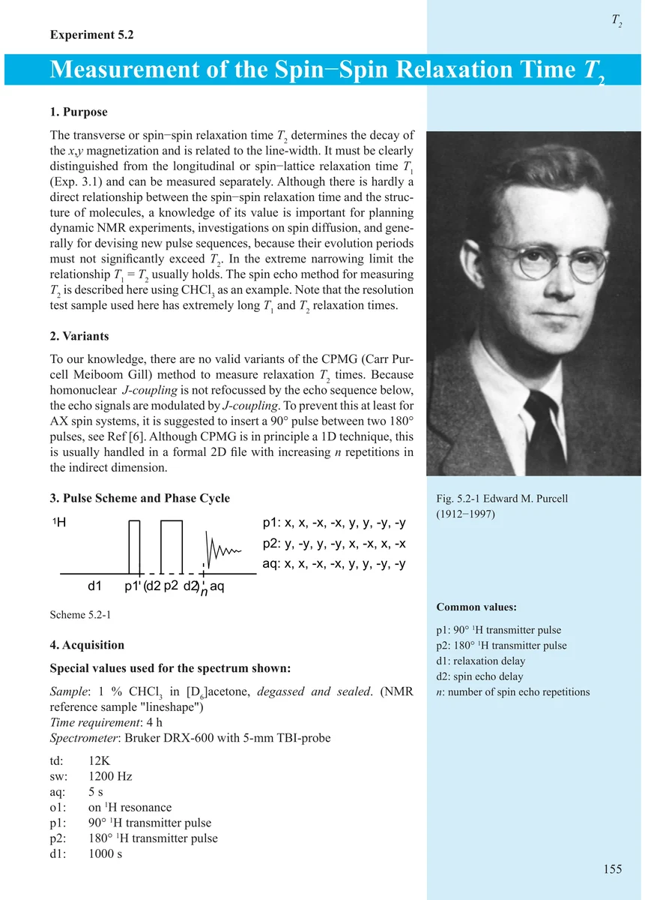
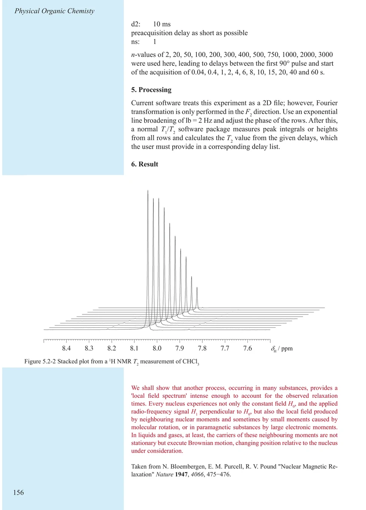
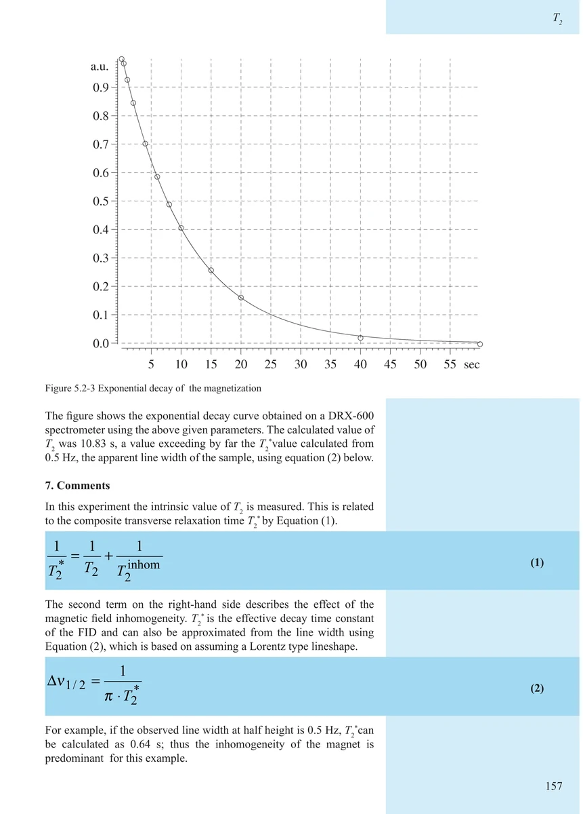
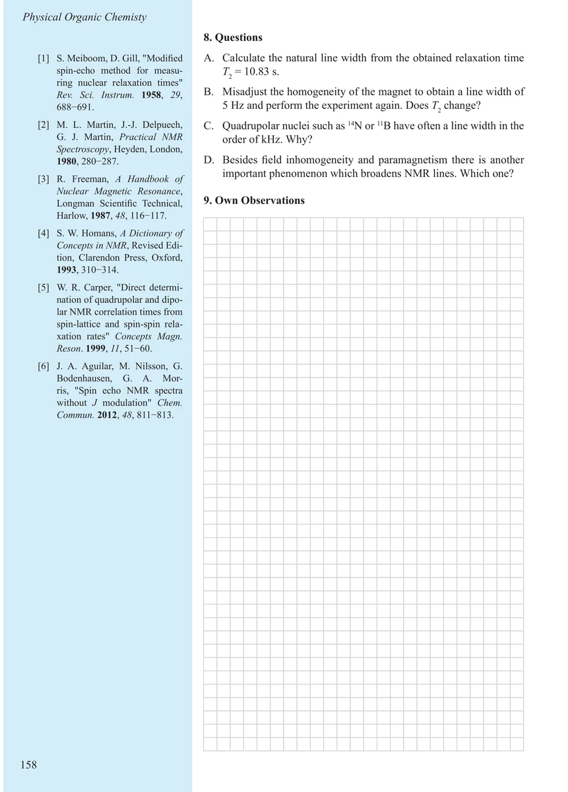

Item 5.2
Measurement of the Spin–Spin Relaxation Time T2
自旋—自旋弛豫时间 T₂ 的测量
PDF 165–168 · 原书 155–158 · Experiments in Physical Organic Chemistry




核磁共振实验方法、脉冲序列与谱图实践
Item 5.2
自旋—自旋弛豫时间 T₂ 的测量
PDF 165–168 · 原书 155–158 · Experiments in Physical Organic Chemistry



